这本手册怎么看
按顺序一步一步做就可以。每一步只做一件事，做完再看下一步。
图上的1红色数字框，就是文字里说要按的地方。文字里有框起来的字，代表画面上一模一样的按钮或文字。
截图里的球场是示意图，你实际使用时，会看到手机镜头拍到的真实画面。
目录
第一部分：PitchCam 怎么用
- 开始前要准备的东西
- 下载 PitchCam
- 第一次打开 PitchCam
- 认识首页
- 填写比赛资料
- 认识拍摄画面
- 开始录像、停止录像
- 记录比分
- 换场次（上半场换下半场）
- 第一次设置直播
- 开始直播
- 直播时网络断了怎么办
- 结束直播
- 结束比赛、看赛后摘要
- 把视频存到手机的「照片」
- 管理录像文件（看剩多少空间、删除）
- 常用设置
- 画面上出现提示或错误信息怎么办
第二部分：用 Facebook 直播
第一部分：PitchCam 怎么用
1. 开始前要准备的东西
- iPhone：系统要 iOS 18 或以上。
- 手机支架或三脚架：一场比赛很长，手拿会累也会晃。建议用能夹住手机的三脚架，架在场边高一点的地方。
- 充电宝和充电线：一边录像一边直播很耗电，建议全程接着充电宝。
- 足够的存储空间：4K 画质一场 90 分钟大约需要 30 GB，1080p 大约 10 GB。PitchCam 首页会告诉你还能录多久。
- 网络（只有直播才需要）：手机的移动数据或 Wi-Fi 都可以，信号要稳定。只录像不直播的话，不需要网络。
2. 下载 PitchCam
- 在 iPhone 主屏幕找到蓝色的「App Store」图标，用手指点一下打开它。
- 点屏幕右下角的「搜索」（放大镜图标）。
- 点屏幕上方的搜索框，输入 PitchCam，再按键盘右下角的「搜索」。
- 在结果里找到绿色足球场图标的 PitchCam，点它右边的「获取」。
- 按手机的提示，连按两下侧边按钮，或输入 Apple 账户密码确认下载。
- 等「获取」变成「打开」，就下载完成了。回到主屏幕也会看到 PitchCam 的图标。
3. 第一次打开 PitchCam
- 在主屏幕点 PitchCam 的图标打开它。
- 把手机横过来拿。PitchCam 只能横着用，画面也是横的。
- 第一次进入拍摄画面时，手机会弹出一个小窗口，问你“PitchCam”想访问你的相机，请按「允许」。不允许的话就没办法录像。
- 接着还会问能不能访问麦克风，也请按「允许」。不允许的话，视频会没有声音。
- 第一次把视频存到「照片」时，会问能不能添加照片，请按「允许」。
打开 iPhone 的「设置」App（灰色齿轮图标）→ 往下滑找到「PitchCam」并点它 → 把「相机」、「麦克风」右边的开关打开（变成绿色），「照片」选「仅添加照片」。
也可以在 PitchCam 里按 设置 → 通用，看到黄色的 前往开启 就按它，会直接跳到要打开的地方。
4. 认识首页
打开 PitchCam 后第一个看到的画面就是「首页」。
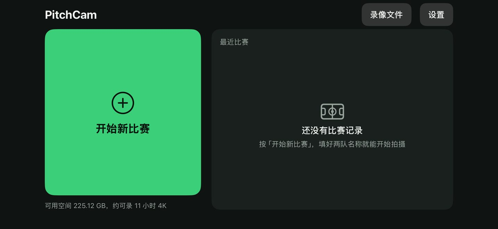
- 1 开始新比赛：大大的绿色按钮。每次要拍一场新比赛，就按这里。
- 2 录像文件：看所有录好的视频、剩多少空间，也可以在这里删除视频。
- 3 设置：调整比分牌大小、录像画质等，一般不用动。
绿色按钮下面的小字会告诉你：手机还剩多少空间、大概还能录几个小时。
拍过比赛以后，首页会多出两样东西：
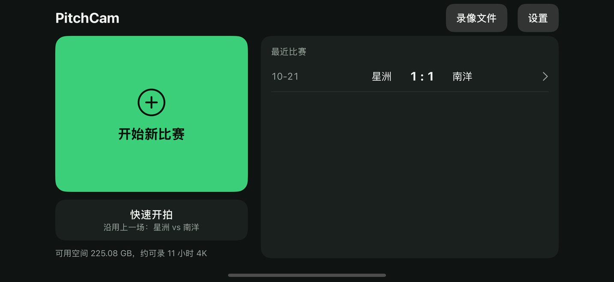
- 1 快速开拍：沿用上一场的两队名称和颜色，按一下直接进入拍摄画面，不用重新填写。下面的小字会写「沿用上一场：某某 vs 某某」。
- 2 右边「最近比赛」：每一行是一场比赛。点一下可以看那场的赛后摘要。如果写着黄色的「未结束，点此继续」，点它会回到拍摄画面继续拍。
5. 填写比赛资料
- 在首页按 开始新比赛，会看到「比赛设置」画面。
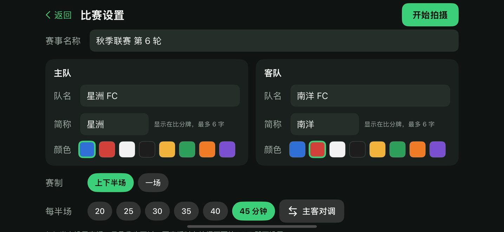
- 1 赛事名称：点一下这个框，输入比赛名称，例如「秋季联赛 第 6 轮」。不填也可以，不填会自动叫「友谊赛」。
- 2 主队名称：点左边「主队」卡片里的第一个框，输入主队的名字。
- 3 简称：这是显示在视频左上角比分牌上的短名字，最多 6 个字。输入队名后会自动帮你填好，想改再点进去改就行。
- 4 颜色：点一个颜色圆点，代表这一队的球衣颜色。被选中的圆点外面会有绿色粗框。
- 5 客队：在右边「客队」卡片，用同样的方法填客队名字、选颜色。两队不要选同一个颜色，不然比分牌上分不清（选到一样的话，会出现黄色提醒）。
- 6 赛制：一般比赛选 上下半场；如果只踢一节不分上下半场，选 一场。
- 7 比赛时间：点一个数字，选每半场踢几分钟（20 到 45 分钟）。
- 8 主客对调：如果把主队和客队填反了，按这个就会整个交换过来。
- 9 全部填好后，按右上角绿色的 开始拍摄，就会进入拍摄画面。
画面最下面会写「本场直播：…」或「尚未设置直播」。只录像不直播也完全没问题，要直播时再到拍摄画面设置就行（见第 10 章）。
6. 认识拍摄画面
这是拍比赛时一直会看到的画面。左边大大的是镜头拍到的画面，这个范围就是录进视频的范围。先认识每个按钮，后面几章会一个一个教。
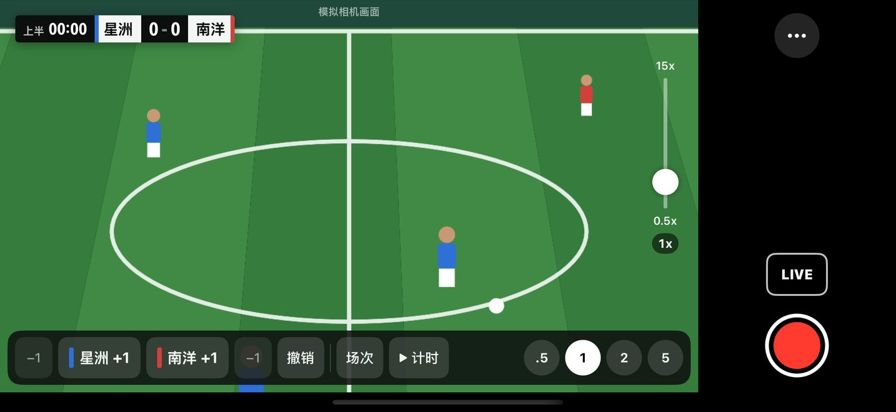
| 编号 | 这是什么 | 做什么用 |
|---|---|---|
| 1 | 比分牌 | 显示比分、队名、时间。会一起录进视频和直播。点它可以打开比分修改面板。 |
| 2 | 变焦滑杆 | 用手指上下拖，画面就会拉近或拉远。 |
| 3 | −1（主队） | 主队比分减 1，按错时用。 |
| 4 | 主队 +1 | 主队进球时按这个，比分加 1。 |
| 5 | 客队 +1 | 客队进球时按这个，比分加 1。 |
| 6 | −1（客队） | 客队比分减 1，按错时用。 |
| 7 | 撤销 | 取消上一个动作，可以一直往回撤销。 |
| 8 | 场次 | 切换上半场、下半场、加时赛、点球大战。 |
| 9 | 计时 | 开始比赛计时。计时中会变成 暂停，按了就停住。 |
| 10 | 倍率按钮 | 圆形的 .5、1、2、5 等数字，点一下直接换到那个倍率。 |
| 11 | … | 更多功能：比赛设置、转播设置、结束比赛。 |
| 12 | LIVE | 开始或结束直播。 |
| 13 | 红色圆形按钮 | 开始或停止录像。 |
7. 开始录像、停止录像
开始录像
- 先把手机架好、横着放，确认左边的画面拍得到整个球场。
- 按右下角的红色圆形按钮。
- 红色圆形会变成红色方块，按钮下方开始跑时间（例如 00:04），表示正在录像。
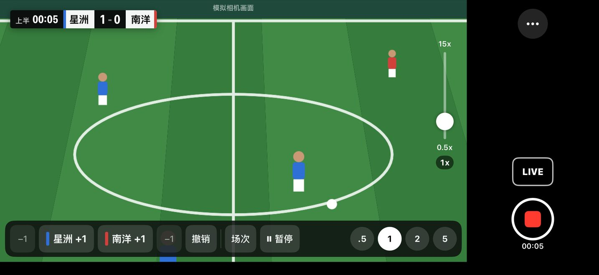
录像时，PitchCam 会每 5 分钟自动存一段。就算手机突然没电或 App 被关掉，之前录的也不会丢。
停止录像
- 再按一次右下角的红色方块按钮。
- 会弹出一个窗口问「停止录像？」，按红色的 停止录像。如果是不小心按到的，按 继续录像 就会继续录。
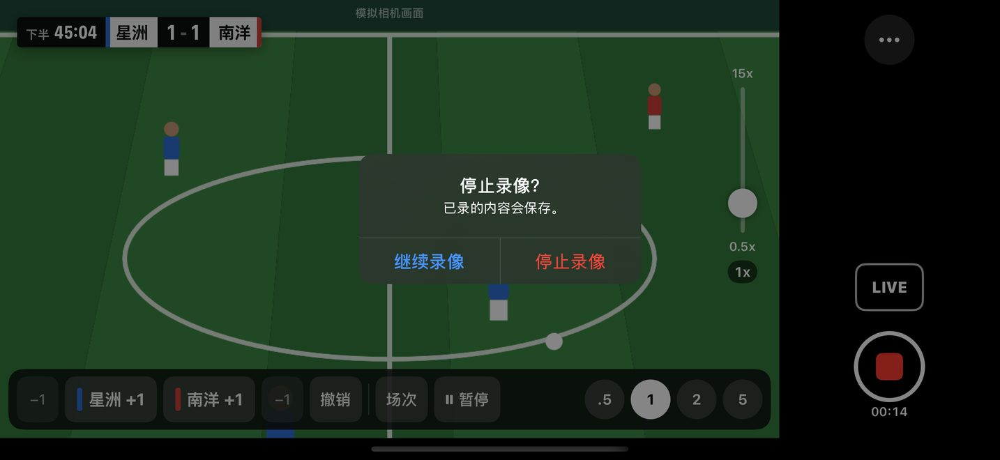
8. 记录比分
最简单的方法：按画面下方的按钮
- 主队进球：按 主队简称 +1。手机会轻轻震一下，比分牌马上更新。
- 客队进球：按 客队简称 +1。
- 按错了：按那一队旁边的 −1，或按 撤销。画面中间会短暂出现「已撤销上一步」。
改更多东西：点比分牌
点左上角的比分牌，会打开「比分与场次」面板。可以直接改比分、队名、时间、补时。
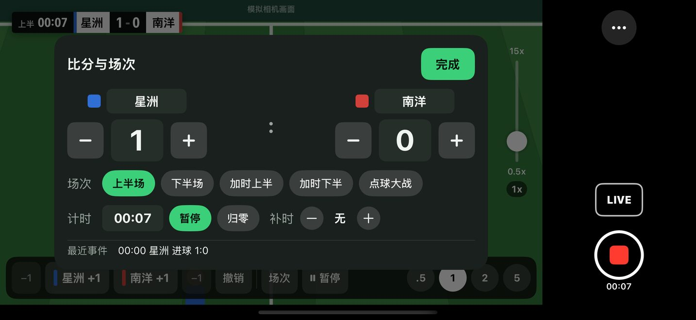
- 1 队名：点一下可以改比分牌上显示的名字（最多 6 字）。
- 2 −、4 +：比分减 1、加 1。
- 3 比分数字：点一下会出现 0 到 20 的菜单，直接选正确的比分。
- 5 场次按钮：直接换到那个场次。
- 6 时间：点一下可以输入「分」和「秒」，再按 应用，把比赛时间调成和裁判一样。
- 7 开始／暂停：开始或暂停比赛计时。
- 8 归零：把这个场次的时间归零。
- 9 补时的 +：每按一下补时加 1 分钟，比分牌上会出现绿色的「+1」「+2」。
- 10 完成：改好了按这个关掉面板。点面板外面的暗色地方也可以关掉。
面板下方的「最近事件」会列出最近 3 个进球，方便你检查有没有记错。
9. 换场次（上半场换下半场）
- 上半场结束时，先按 暂停 把计时停下来。
- 下半场要开始时，按画面下方的 场次，会弹出菜单。
- 点 下半场。当前场次旁边会有勾。
- 开球时按 计时。时间会从 45:00 接着往下跑（以每半场 45 分钟为例），不是从 0 开始。
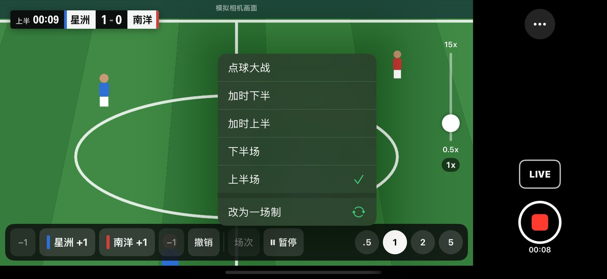
- 加时赛：选 加时上半、加时下半，用法和上下半场一样。
- 点球大战：选 点球大战。之后按 +1 加的是点球进球数，比分牌上会出现黄色的「PK 4-3」，原本的比分不会变。
- 换错场次：按 撤销 就能换回来，时间也会一起恢复。
- 其实只踢一节：菜单最上面有 改为一场制，按了就不分上下半场。
10. 第一次设置直播
直播需要一组「推流密钥」，这是直播平台给你的一串英文和数字，就像直播用的密码。Facebook 的推流密钥怎么拿，请先看第 20 章，拿到以后再回来做这一章。YouTube 的推流密钥在「YouTube 工作室」→「直播」→「推流密钥」。
- 先把推流密钥复制到 iPhone（方法见第 21 章）。
- 在拍摄画面按右边的 LIVE。第一次按会打开「设置直播」画面。
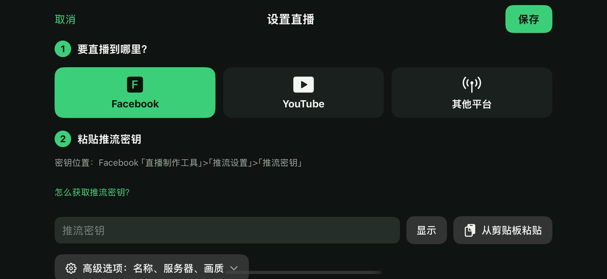
- 1 「要直播到哪里？」：点你要直播的平台，例如 Facebook。被选中的会变成绿色。
- 2 按 从剪贴板粘贴，刚才复制的推流密钥就会自动填进 3 的框里（会显示成一个个圆点，这是正常的，按 显示 可以看到内容）。如果手机弹出「允许粘贴吗？」，请按「允许粘贴」。
- 用手指在画面上往上滑，找到「测试一下（不会真的开播）」。
- 按 测试连接（下图 1）。这只是测试，不会真的开播，观众看不到。
- 等几秒，看到绿色的「连接成功，可以开播」（下图 2），就表示设置正确。如果出现红色的字，看第 18 章的说明。
- 按右上角的 保存（下图 3）。以后按 LIVE 就会直接开播，不用再设置。
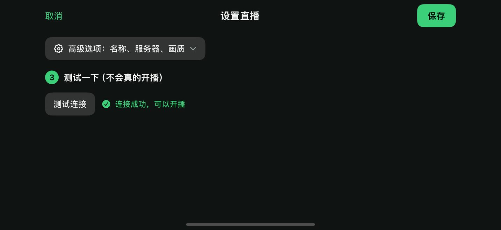
11. 开始直播
- 确认手机有网络（移动数据或 Wi-Fi）。
- 在拍摄画面按 LIVE。
- 画面中间会出现很大的倒数数字 3、2、1。这时 LIVE 按钮会变成 取消，如果不想开播了，赶快按它。
- 倒数完按钮会显示「连接中」，稍等一下。
- LIVE 按钮变成红色，下面开始跑时间，手机震一下，就表示正在直播了。
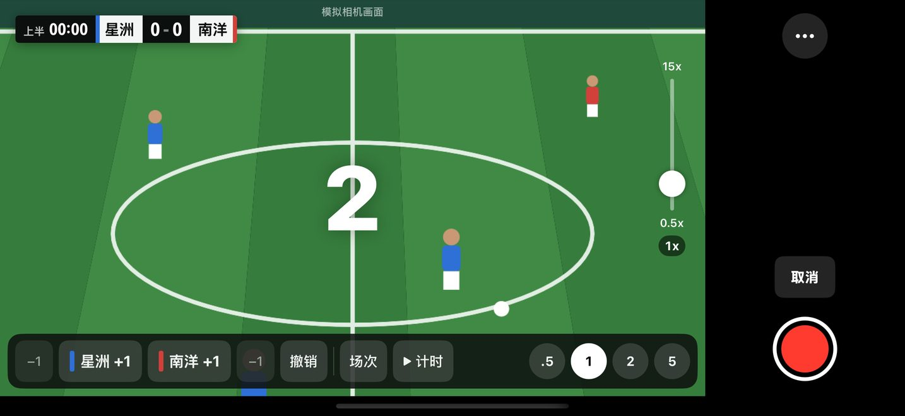
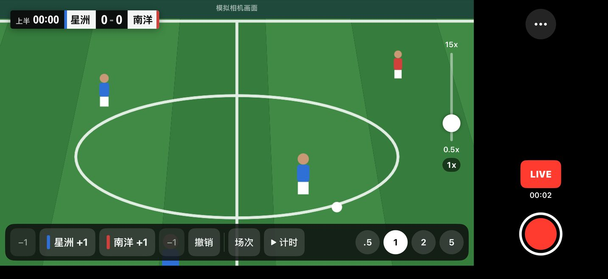
12. 直播时网络断了怎么办
不用做任何事，PitchCam 会自己重新连接，录像也不会中断。
- 重新连接时，LIVE 按钮会变成黄色，写着「重连」和次数（例如 2/10），画面上方会出现「直播重新连接中 2/10，录像持续中」。
- 网络恢复后，按钮会自己变回红色的 LIVE。
- 试了 10 次都连不上，按钮会变成黄色的 重试，画面上方写「直播已中断」。等网络好一点，按 重试 就会重新开播。
网络一直不稳，可以换个信号好一点的位置，或改用 Wi-Fi。
13. 结束直播
- 直播中再按一次红色的 LIVE。
- 弹出「结束直播？」，按红色的 结束直播。不小心按到的话，按 继续直播。
- LIVE 按钮变回原来的样子，直播就结束了。如果同时在录像，录像会继续，要另外按红色按钮停止。
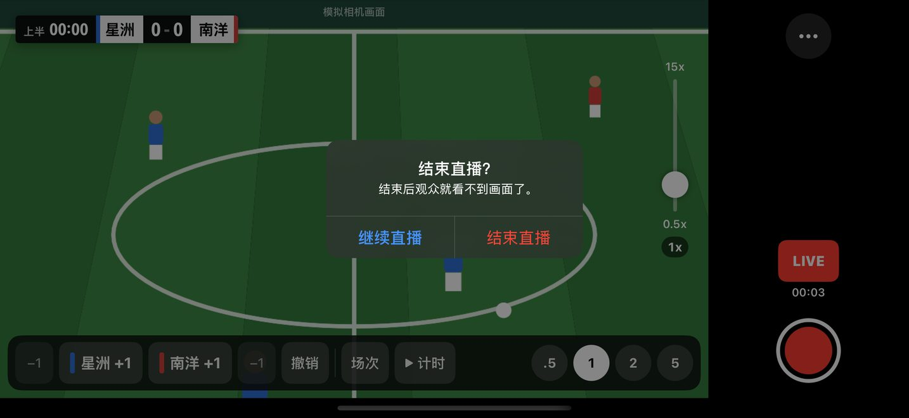
14. 结束比赛、看赛后摘要
- 比赛踢完后，按拍摄画面右上角的 …。
- 在菜单里按红色的 结束比赛。
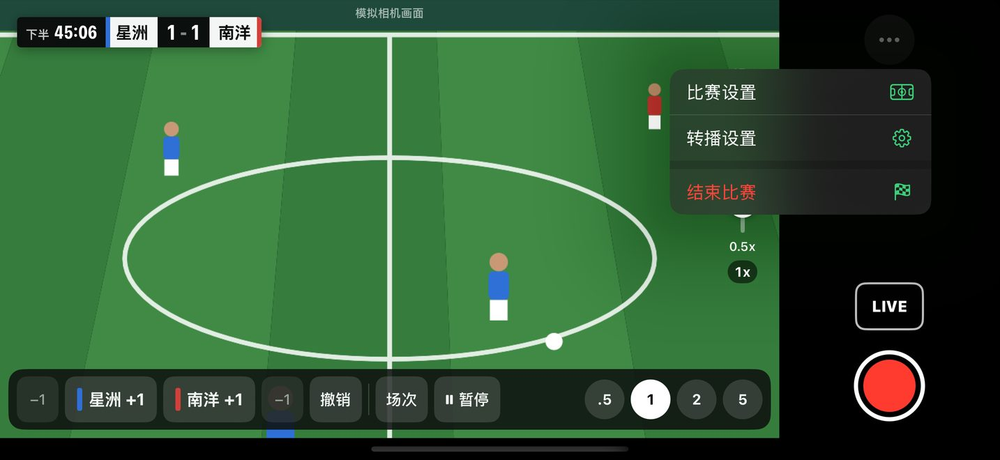
- 弹出「结束这场比赛？」，按红色的 结束比赛。PitchCam 会自动停止录像和直播。
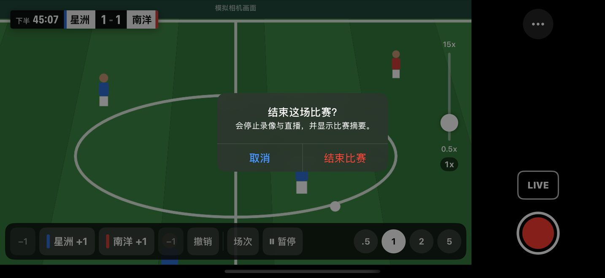
- 接着会看到「比赛结束」的赛后摘要画面。
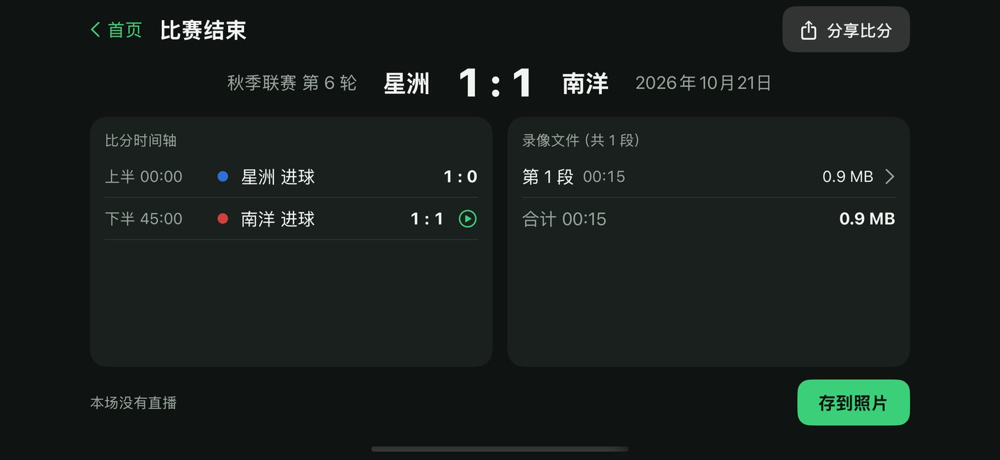
- 1 最终比分。
- 2 「比分时间轴」：每个进球的时间。旁边有播放图标的，点一下就会播放进球那一段视频。
- 3 「录像文件」：这场比赛录了几段视频，点一段就能播放。
- 4 存到照片：把视频存到手机的「照片」，见下一章。
- 5 分享比分：把比分和进球时间用微信、信息等发给别人。
- 6 首页：回到首页。
结束比赛后，PitchCam 会记住这两队，下次在「常用球队」就能直接选。
15. 把视频存到手机的「照片」
录好的视频先存在 PitchCam 里面。要发给别人、上传或剪辑，先把它存到「照片」。
- 在赛后摘要按右下角的 存到照片。（也可以从首页的 录像文件 存，见下一章。）
- 第一次存的时候，手机会问能不能添加照片，按「允许」。
- 按钮会变成「处理中…」。PitchCam 正在把每 5 分钟一段的视频接成一个完整的视频，视频越长等越久，请不要关掉 App。
- 看到「已存到「照片」。」就完成了，按 好。
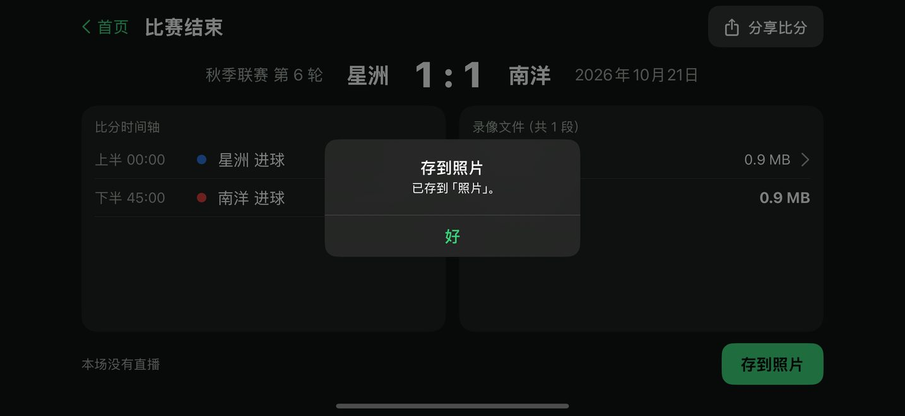
在「照片」里找视频
- 回到 iPhone 主屏幕，打开彩色花朵图标的「照片」App。
- 视频会在最新的位置（通常是最下面或最前面）。视频缩略图的右下角会显示视频长度。
- 点视频就能播放，按左下角的分享图标可以发给别人。
16. 管理录像文件（看剩多少空间、删除）
- 在首页按右上角的 录像文件。
- 右上角会写「已用多少，可用多少」。
- 每一行是一场比赛的视频。
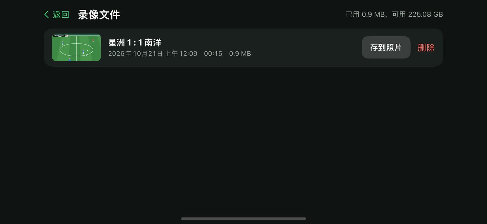
- 1 存到照片：和上一章一样，把这场的视频存到「照片」。
- 2 删除：删掉这场的所有视频。会先问「删除录像？」，按红色 删除 才会真的删。删了就找不回来，请先确定已经存到「照片」。比分记录会保留。
17. 常用设置
在首页按右上角 设置，或在拍摄画面按 … → 转播设置。上方有「直播」「录像」「比分牌」「通用」四个标签。大部分人不需要改任何设置。录像或直播中，有些选项会锁住不能改。
比分牌
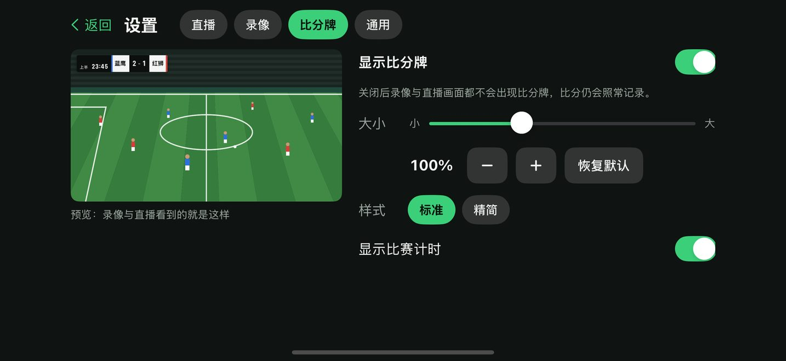
- 1 「显示比分牌」：关掉的话，视频和直播都不会有比分牌，但比分还是会记录。
- 2 大小：拖动滑杆把比分牌变大或变小。按 恢复默认 回到原来的样子。
- 3 样式：「标准」或「精简」（比较小的一条）。
- 4 「显示比赛计时」：关掉的话，比分牌上不显示时间。
录像
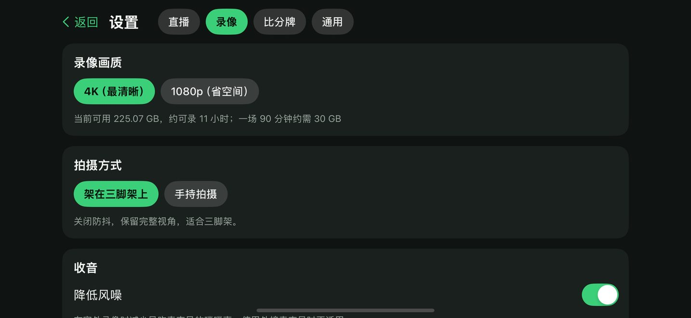
- 1 录像画质：「4K（最清晰）」或「1080p（省空间）」。手机空间不够时选 1080p。比较旧的 iPhone 会固定用 1080p。
- 2 「架在三脚架上」：用三脚架时选这个，画面最宽。
- 3 「手持拍摄」：用手拿着拍时选这个，画面比较不会晃，但会稍微变窄。
- 4 「降低风噪」：在室外录像时，减少风吹麦克风的噗噗声，建议打开。
通用
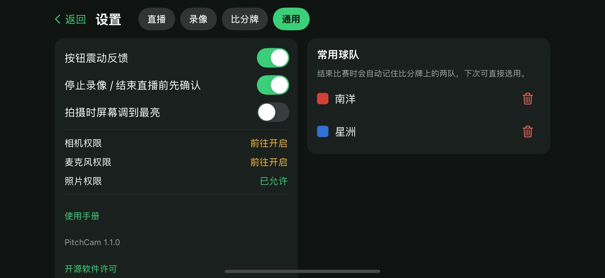
- 1 「停止录像 / 结束直播前先确认」：打开时，停止前会再问你一次，避免不小心按到。建议保持打开。
- 2 「拍摄时屏幕调到最亮」：大太阳下看不清屏幕时可以打开，但比较耗电。
- 下面的相机、麦克风、照片权限显示绿色「已允许」才是正常的。
18. 画面上出现提示或错误信息怎么办
拍摄画面上方的黄色提示
| 看到的文字 | 意思 | 怎么做 |
|---|---|---|
| 请将手机转为横向拿，画面方向才会正确 | 手机竖着拿 | 把手机横过来。 |
| 画面上下颠倒，请关闭方向锁定或把手机转回来 | 手机拿反了 | 把手机转 180 度；或从屏幕右上角往下滑，关掉有锁头图标的「竖排方向锁定」。 |
| 手机温度偏高，请避免阳光直射 | 手机太热 | 给手机遮阳、拿掉手机壳。直播画质可能会自动降低，温度下来就会恢复。 |
| 存储空间只剩约 N 分钟 | 手机快满了 | 到「录像文件」把已经存到「照片」的旧视频删掉。 |
| 电量 N%，建议接上充电宝 | 电量低于 20% | 接上充电宝。 |
| 直播重新连接中 N/10 | 网络断了，正在重连 | 等它自己连上，见第 12 章。 |
| 直播已中断：…。按 LIVE 可重新开播 | 重连 10 次都失败 | 确认网络后按 重试。 |
弹出「无法执行」窗口
| 看到的文字 | 怎么做 |
|---|---|
| 存储空间不足，请先删除旧的录像文件 | 到「录像文件」删除旧视频，或删掉手机里其他用不到的东西。 |
| 画面方向不正确，无法开始。请将手机转为横向后再试。 | 把手机横过来，再按一次。 |
| 直播设置有问题：… | 按后面写的原因修正直播设置，见下表。 |
测试连接失败的原因
| 看到的文字 | 怎么做 |
|---|---|
| 尚未填写推流密钥 | 先复制推流密钥，再按「从剪贴板粘贴」。 |
| 推流密钥中不应有空格，请重新粘贴 | 密钥复制到多余的字，重新复制一次再粘贴。 |
| 服务器拒绝连接，请确认推流密钥是否正确或已过期 | 密钥错了或换过。回 Facebook 重新复制最新的推流密钥。 |
| 连接超时，请确认网络或服务器地址 | 手机网络不好，换个地方或改用 Wi-Fi 再试。 |
| 无法连接到服务器，请确认网络与服务器地址 | 确认手机有网络；如果改过「高级选项」里的服务器，改回原来的。 |
| 服务器地址格式不正确，应以 rtmp:// 或 rtmps:// 开头 | 「高级选项」里的服务器填错了。重新选一次平台，地址就会自动填回正确的。 |
相机和保存
| 看到的文字 | 怎么做 |
|---|---|
| 尚未允许使用相机 | 按下面的「前往「设置」开启权限」，把相机开关打开。 |
| 相机暂时被系统中断，稍后会自动恢复 | 可能有电话打进来或开了别的相机 App，等一下就好。 |
| 相机发生错误，请离开拍摄画面再进入 | 关掉 PitchCam 再打开（从屏幕最下面往上滑到一半停住，把 PitchCam 往上滑掉），然后在首页「最近比赛」点这场的「未结束，点此继续」，就会回到拍摄画面，比分都还在。 |
| 没有「照片」的写入权限… | 到 iPhone「设置」→「PitchCam」→「照片」，选「仅添加照片」。 |
第二部分：用 Facebook 直播
19. 先了解这几件事
- PitchCam 是用 Facebook 的「串流软件」方式直播。你要先到 Facebook 拿一组「推流密钥」（Facebook 上叫「串流金钥」），粘贴进 PitchCam。
- 拿推流密钥要用电脑（Windows 或 Mac 都可以）的浏览器，例如 Chrome、Edge、Safari。
- 可以直播到你的个人主页、你管理的公共主页，或你有权限的小组。
- 只要设置一次「持续性串流金钥」，以后每场比赛都用同一组密钥，不用每次重新拿。
- 每次开播时，PitchCam 先开始传画面，再到 Facebook 按「开始直播」，观众才看得到。
下面的截图是繁体中文的 Facebook 画面，按钮文字后面的括号是截图上的繁体写法。你的 Facebook 如果是简体中文或其他语言，文字可能略有不同，请对照截图上红色数字框的位置和图标操作。Facebook 偶尔会改版，也可以参考 Facebook 帮助中心。本章按 2026 年 10 月的 Facebook 画面编写，截图中的个人资料已遮盖。
20. 在电脑上拿到 Facebook 的推流密钥
- 打开电脑，打开浏览器（Chrome、Edge 或 Safari）。
- 在最上面的地址栏输入 facebook.com/live/create，按键盘的 Enter。
- 如果还没登录，输入你的 Facebook 账号密码登录。登录后会看到「建立直播视频」（建立直播視訊）页面。
- 在左边找到「选择发布位置」（選擇發佈位置），点它打开菜单。

- 选一个要直播的地方：
- 直播到自己的主页：选第一项「发布到个人主页」（發佈到個人檔案）。
- 直播到球队公共主页：选第二项「发布到你管理的公共主页」（發佈到你管理的粉絲專頁），再点你的主页。
- 直播到球队小组：选第三项「发布到小组」（發佈到社團），再点你的小组。
- 在右边「开始直播」的白色卡片里，按下面蓝色的「设置直播视频」（設定直播視訊）。

- 在「选择视频来源」，点有钥匙图标的「串流软件」（串流軟體）。不要选有相机图标的「网络摄像头」。「你什么时候开始直播？」保持「现在」就行。

- 用鼠标滚轮往下滚，找到「串流软件设置」（串流軟體設定）。
- 点「高级设置」（進階設定），把它展开。

- 把「持续性串流金钥」（持續性串流金鑰）右边的开关打开（变成蓝色）。打开以后，这组密钥以后每次直播都能用。
- 看一下「服务器网址」（伺服器網址），开头应该是 rtmps://live-api-s.facebook.com。PitchCam 已经自动填好这个地址，不用复制。
- 往上滚回「串流金钥」，按它右边的「复制」（複製）。推流密钥就复制好了。

21. 把推流密钥发到 iPhone
密钥现在在电脑里，要想办法让 iPhone 也复制到它。选一个你会用的方法：
方法 A：电脑是 Mac，而且和 iPhone 登录同一个 Apple 账户
- 在 Mac 上按了「复制」以后，什么都不用做。
- iPhone 会自动拿到同一份复制内容（Apple 的「通用剪贴板」）。两台都要打开蓝牙和 Wi-Fi，而且要放在旁边。
- 直接到 PitchCam 按 从剪贴板粘贴。
方法 B：发消息给自己（任何电脑都可以）
- 在电脑上打开你常用的聊天软件（例如微信电脑版的「文件传输助手」），或电子邮件。
- 在输入框点一下，按键盘 Ctrl + V（Mac 是 ⌘ + V）粘贴密钥，发送。
- 在 iPhone 打开同一个聊天或邮件，用手指按住那串密钥不放，出现菜单后点「拷贝」。
- 到 PitchCam 按 从剪贴板粘贴。
- 粘贴好以后，建议把那条消息或邮件删掉，避免别人看到。
22. 把推流密钥粘贴进 PitchCam
按第 10 章做：在 PitchCam 拍摄画面按 LIVE → 选 Facebook → 从剪贴板粘贴 → 测试连接 → 看到「连接成功，可以开播」→ 保存。
因为已经打开「持续性串流金钥」，这件事只要做一次。以后每场比赛直接按 LIVE 就行。
23. 比赛当天怎么开播
开播需要手机和 Facebook 两边都按。建议一个人负责手机、另一个人用电脑开 Facebook。
- 在电脑打开 facebook.com/live/create，按第 20 章第 4 到 7 步，选好发布位置、按「设置直播视频」、选「串流软件」。
- 在右边「新增帖子详细信息」，点「你直播视频的主题是什么？」输入标题，例如「秋季联赛 第 6 轮 星洲 FC vs 南洋 FC」。
- 在 PitchCam 按 LIVE，等按钮变成红色。
- 回到 Facebook，等几秒钟，中间黑色的预览区会出现 PitchCam 拍到的画面（含比分牌）。
- 按左下角蓝色的「开始直播」（開始直播）。到这一步，观众才看得到。
结束的时候
- 先在 Facebook 按「结束直播」并确认。
- 再到 PitchCam 按红色的 LIVE → 结束直播（见第 13 章）。
- 直播视频会留在你的 Facebook 个人主页、公共主页或小组上。
24. Facebook 直播常见问题
Facebook 中间一直显示「连接串流软件以开始直播」，没有画面？
表示 Facebook 还没收到 PitchCam 的画面。确认 PitchCam 的 LIVE 已经是红色；如果是黄色或「重试」，先处理网络问题。再确认 PitchCam 里粘贴的密钥和 Facebook 上的一样（Facebook 按过「重设」的话要重新粘贴）。
PitchCam 测试连接出现「服务器拒绝连接」？
密钥不对或已经失效。回到 Facebook 重新按「复制」，再到 PitchCam 的 设置 → 直播 → 那一项的 编辑，重新粘贴并测试。
没有打开「持续性串流金钥」会怎样？
密钥只能用一段时间（Facebook 写着在你退出 Facebook 账号之前都有效），之后要重新拿、重新粘贴。建议打开。
观众说看不到直播？
确认 Facebook 上已经按了「开始直播」，而且帖子的分享对象是观众看得到的范围（例如「公开」或小组成员）。
画面很卡？
直播需要稳定的上传网络，建议至少 5 Mbps。换到信号好的位置；PitchCam 的直播画质用「自动（推荐）」，网络差时会自动降到 720p。